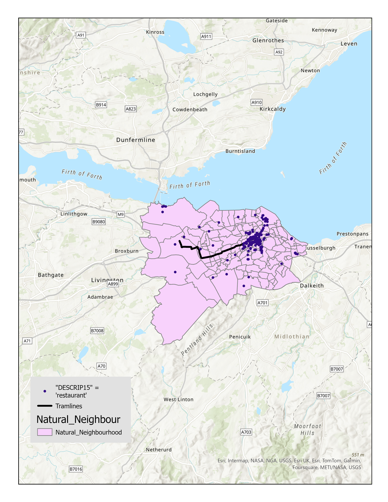
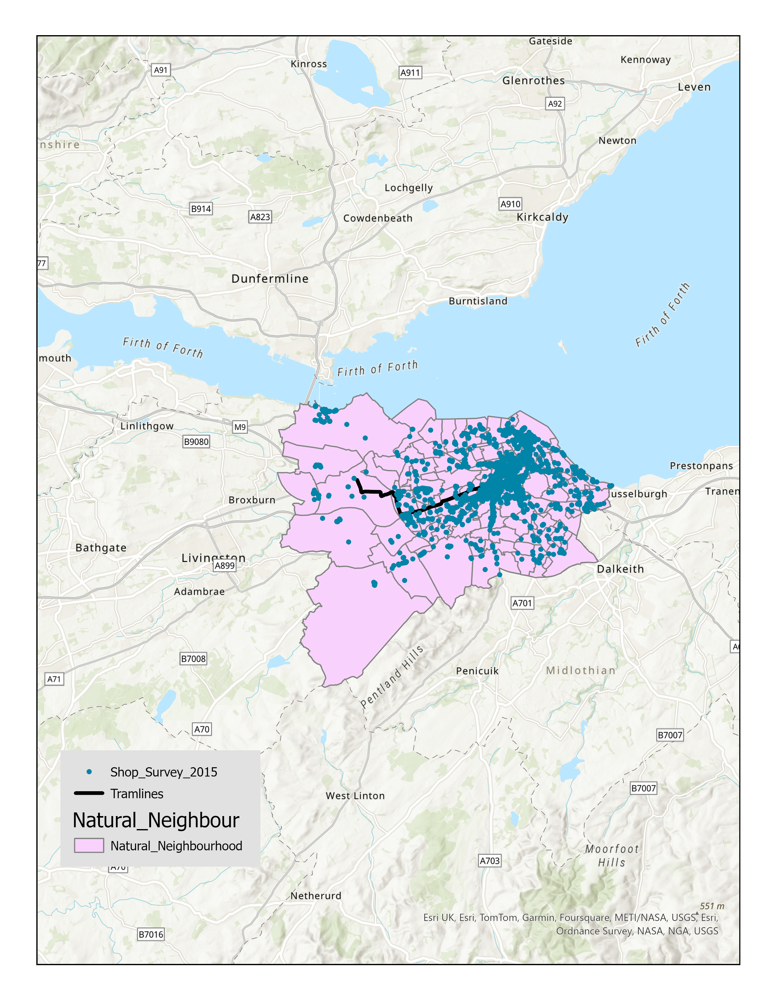
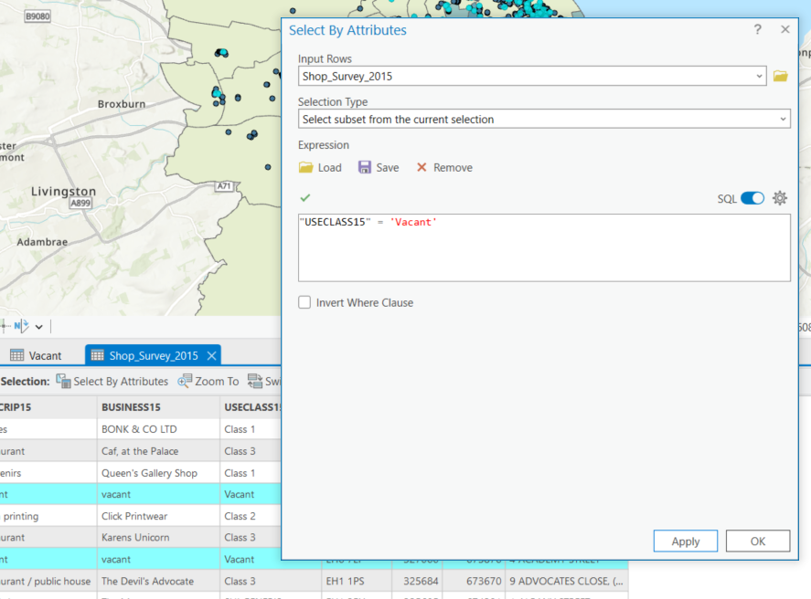
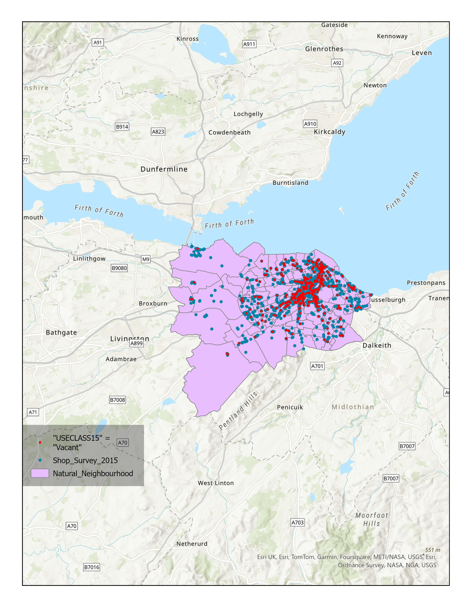
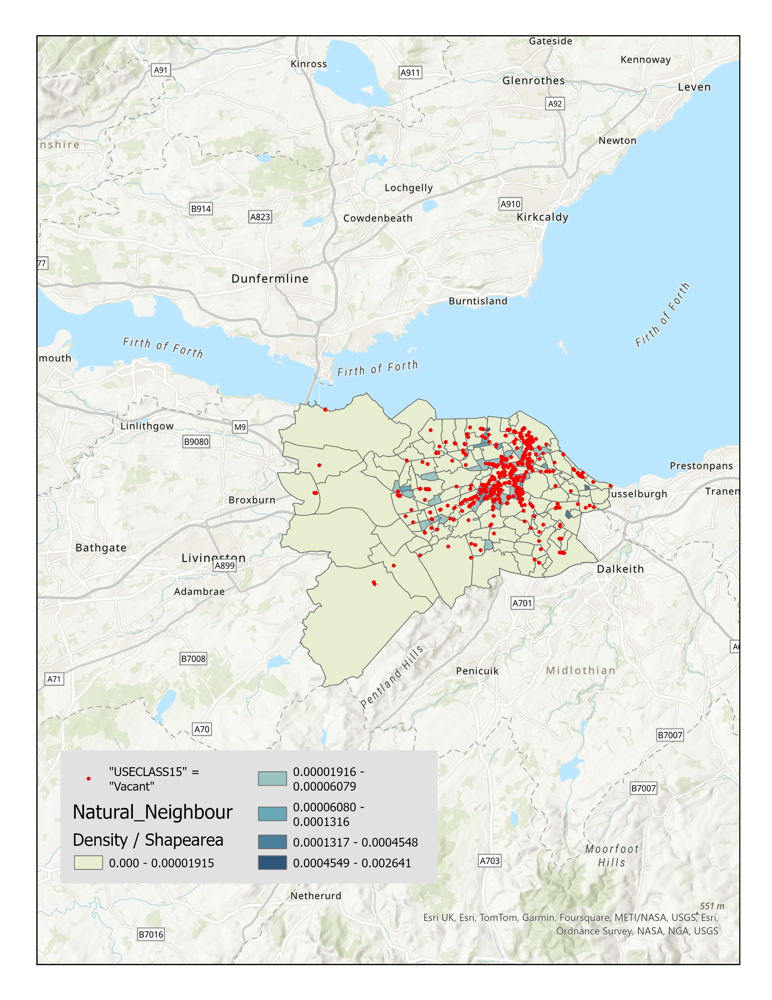
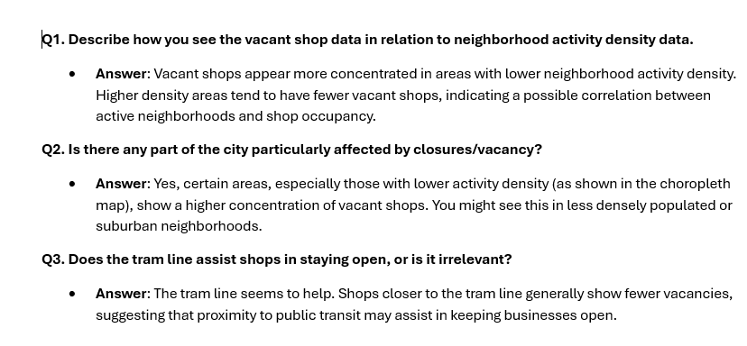

Using data from the City of Edinburgh open data portal to visualize neighborhood activity and shop closures.
This map shows all restaurants across Edinburgh based on data from the Shop Survey.
This map shows all shops and tramlines overlaid on Edinburgh neighborhoods.
The SQL selection used to identify vacant shops in Edinburgh from the dataset.
This map shows all shops in Edinburgh with vacant shops highlighted in red.
Vacant shops are shown overlaid on a choropleth map of neighborhood density, normalized by area.
This map adds tramlines to show their relation to vacant shop locations.
These are my answers to the questions presented in the PDF.
